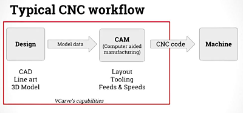

Computer Numerically Controlled (CNC) - Routing

CNC Router Essentials
Basic CNC (computer numerical controlled) routers operate on three axes: X, Y and Z. The X and Y move it front to back, while the Z axis is vertical. The machine can move all three ways at once allowing for complex cutting and simple designs. The ShopBot uses a high speed spindle and the X-Carve and ShopSabre use an industrial router. The spindle is much quieter and is much more accurate than the router. The spindle will also last much longer than the woodworking router. The bed of CNC router will be of metal or plywood and is covered by a spoilboard. The spoilboard is usually a sheet of MDF or plywood that is consumable. The CNC router is controlled by an external computer. The computer will control the router or you can manually move the router using the control software. The workflow of CNC routing consists of designing, toolpathing and machining. They are each associated with a different type of software. CAD for designing, CAM for toolpathing and the Controller software for machining code.
Introduction To CNC
Computer Numerically Controlled (CNC) SoftwareVCarve
VCarve Pro Tutorials
VCarve Pro Manual
VCarve Pro Shortcut Keys
Easel
Easel Sign In
CNC Router Bits
There are four basic flute types: Straight, Spiral up-cut, Spiral down-cut, and Compression. Each has its advantages and disadvantages, which are spelled out in the picture below.

Feeds and Speeds
Understanding Speeds and Feeds

Open Source Furniture
Open Desk
Make: Open Source Furniture
AtFab: CNC Furniture
OpenDesignFurniture
Pedro Terra Labs
DyvikDesign
Ronen Kadushin
Obrary
Ronen Kadushin

MIG Welding
Welding is the process of joining to metals together using similar metals. The weld actually melts the metals you are bonding together. In soldering, you heat the metals to be bonded, but you do not melt them. The solder acts as the bond between the two metals and is the only metal melted during the process. We will be using the MIG or gas metal arc welding to weld in class.
MIG Welding Basics
MIG Welding Techniques
Basic Welding Terminology
Assignment- Welding, CNC Router Sign, CNC Cutting Board and Furniture
1. Welding
- Practice your MIG welding on the testing plates. Lay down several welds to try to make a row of nickels.
- Take pictures of your welds and talk about the process of welding. Explain what is happening when you weld and the physics behind welding. What is the difference between a good and bad weld?
2. CNC Router
- Create a sign using the CNC router.
- The sign will and will not exceed 23" x 5.5".
- VCarve a sign using the ShopBot CNC router.
- Include the final file on your website and photos of the process.
3. Create an inlay cutting board using the CNC router
- Gather the materials needed for your project. 6" x12" x1/16" Maple, 6" x 12 x 1/2" Walnut
- You can see instructions with this link.
- You will need to create an Easel account.
- Design a large or small piece of furniture or sign to cut on the CNC Router. You cannot exceed one 48" x 96" sheet of plywood.
- CNC Joinery
- CNC Furniture From OpenDesk
- CNC Flat Pack Furniture
- CNC Chair Design
- CNC Bookcase
ASSIGNMENTS TO DOCUMENT
- 1. Document all of the projects with pictures.
- 2. Include a discussion of each project of what you learned
- 3. Include all original files
- 3. Include all materials used and feeds and speeds
Back to index